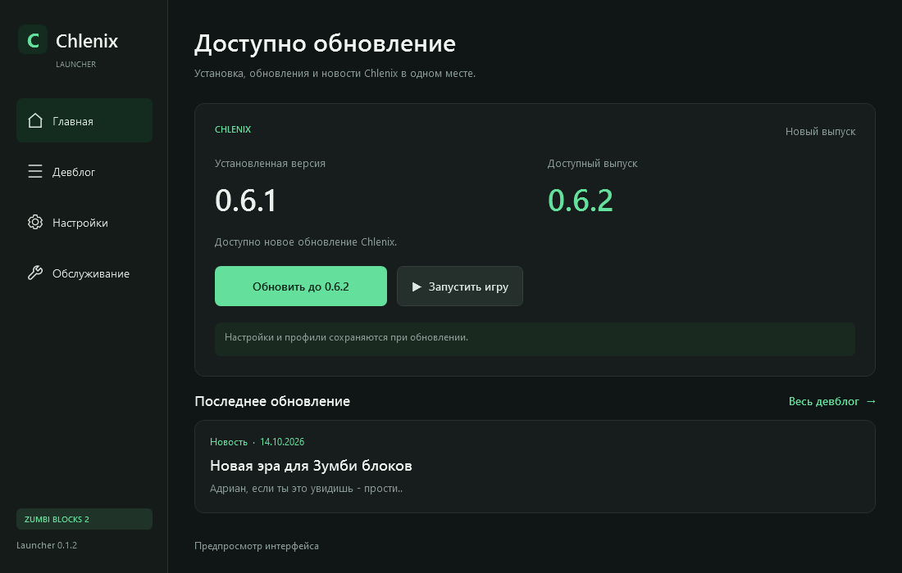

Для Zumbi Blocks 2 Open Alpha
Chlenix
Установка, обновления
и новости в одном Launcher.
Item ESP Map Hack
Mini-map Combat
Chlenix Launcher

Начало работы
Три шага.
Установи игру
Zumbi Blocks 2 Open Alpha
из библиотеки Steam.Открой Launcher
Скачай EXE и запусти.
Игра определяется из Steam.Установи Chlenix
Закрой игру и нажми «Установить».
После запуска меню открывается F11.
Из проекта